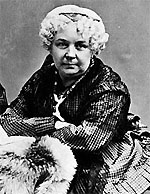

|

|

|
|
|
Born into a wealthy New York family, Elizabeth Cady Stanton
became a leader of the women's movement through her
involvement with abolitionism. Unhappy with the limited
role granted women by abolitionists, she played a central
role in the Seneca Falls Women's Rights Convention of 1848.
After the Civil War, Stanton and Susan B. Anthony led the
faction of women's rights advocates that split from the
abolitionists and Republicans who placed a higher priority
on the rights of freedmen than on those of women. Later,
Stanton and Anthony created the first independent
organization of women advocating women's suffrage.
A comfortable background did not provide full time
support for Stanton's activities on behalf of women's
rights. The opposition of her father and husband and the
demands of her seven children limited Stanton's role. She
remained at home, writing many influential petitions and
speeches while Anthony traveled to spread the message.
While advocating an expanded role for women, Stanton
remained allied with the abolitionists through the Civil
War. After the War, abolitionists joined with the
Republican Party to protect the rights of freedmen, viewing
the campaign for women's suffrage as a threat to the rights
of ex-slaves. Rebuffed by their former allies, Stanton and
Anthony hoped that Democrats would adopt their cause on the
basis that educated women had a greater entitlement to the
vote than did "illiterate" ex-slaves. A deep divide within
the women's movement resulted, with those willing to
postpone the vote for women until black suffrage was
achieved remaining with their traditional abolitionist
allies.
Stanton and Anthony became disillusioned when it became
clear that Democrats were more interested in obstructing
black rights than in establishing women's rights. Efforts
to join with organized labor were unsatisfactory, as skilled
workers did not welcome the competition of women in their
fields, and class divisions separated the interests of
Stanton and Anthony from those of working class women.
Unable to find a place for their movement in any established
organization, they formed the National Woman Suffrage
Association in 1869, which sought a constitutional amendment
ensuring a woman's right to vote as the first step in
establishing women's equal rights. Those who allied with
the Republicans soon created the American Woman Suffrage
Association, advocating only women's right to vote. The
split between these two factions continued for over twenty
years. Blind and in ill health, Stanton died in New York in
1902.
Source: Joan Waugh, ed., Facts on File Encyclopedia of American
History: Civil War and Reconstruction, 1856 to 1869 (New York: Facts on
File, 2003), 334-335.
|